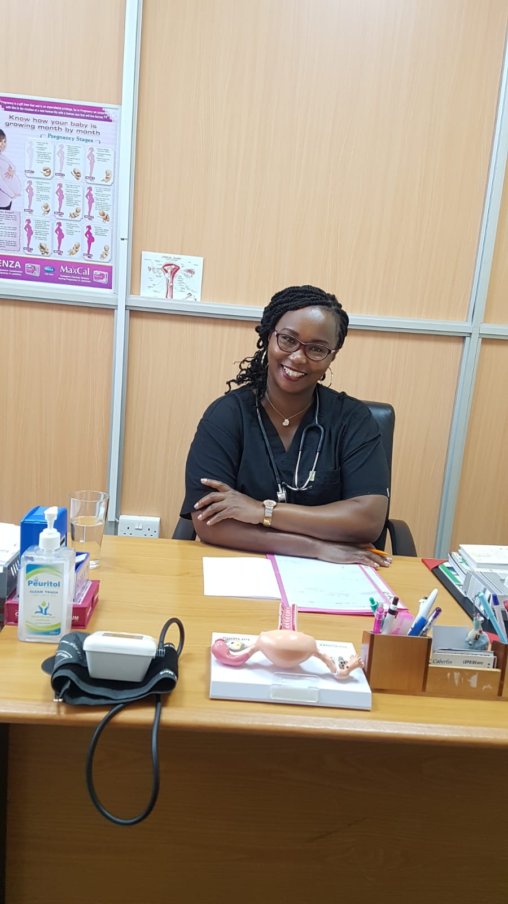
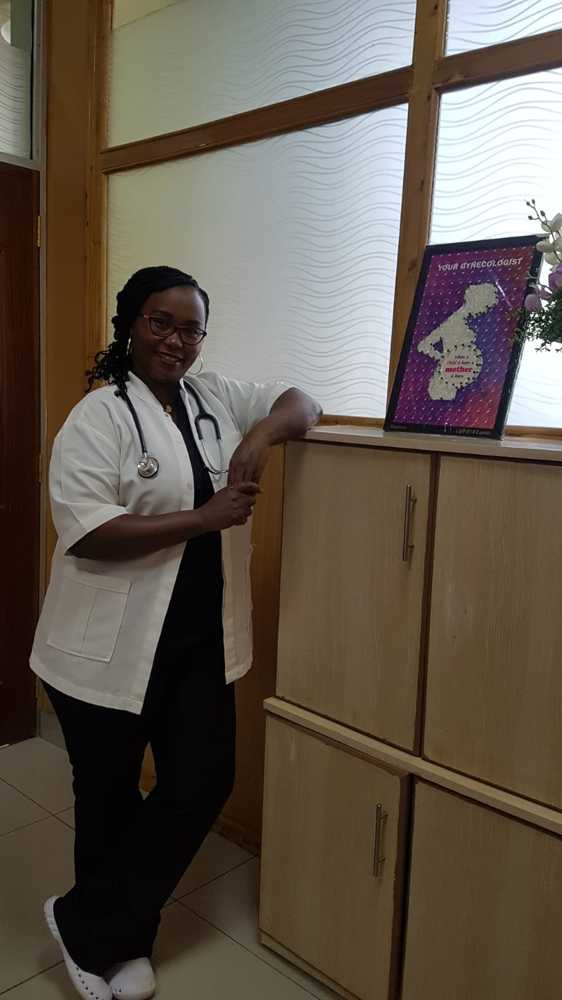

Trusted Women's Healthcare
Consultant Gynecologist & Obstetrician
Dedicated to providing compassionate, evidence-based healthcare for women through every stage of life—from adolescence to motherhood and beyond.

Dr. Joyce Muthama is a highly experienced Consultant Gynecologist and Obstetrician with over 15 years of professional medical practice. She is passionate about improving women's health through evidence-based medicine, personalized care, and patient education. Her work focuses on reproductive health, pregnancy care, preventive healthcare, and supporting women through every phase of life.

Driven by a passion to make quality women's healthcare more accessible, Dr. Joyce Muthama founded Womenwellklinic, a clinic dedicated to providing personalized, compassionate, and evidence-based care for women of all ages.
Through Womenwellklinic, she has created a welcoming environment where women can receive professional medical support for reproductive health, pregnancy care, family planning, preventive screenings, and overall wellness.
Her vision was to establish a healthcare center where every woman feels heard, respected, and empowered to make informed decisions about her health and wellbeing.
Consultation Fee: KES 3,000
Write down any questions you'd like to discuss during your consultation.
Complete the form below and our clinic will contact you to confirm your appointment.
Womenwellklinic is committed to providing compassionate, accessible, and evidence-based healthcare for women of all ages. Every patient is treated with dignity, respect, and personalized attention in a comfortable environment.
Discover what makes her approach to women's healthcare trusted by so many patients.
Providing compassionate and evidence-based healthcare to women.
Every patient receives individual attention and treatment plans.
Committed to preventive medicine and high-quality reproductive care.
Helping women through adolescence, pregnancy and menopause.
Providing quality healthcare through Womenwellklinic with a commitment to excellence, compassion, and patient-centered care.
"Dr. Joyce made me feel comfortable throughout my pregnancy. She explained every step with patience and professionalism."
"Excellent care from the first consultation to delivery. I always felt listened to and supported."
"Womenwellklinic provides a warm and welcoming environment. Highly recommended!"